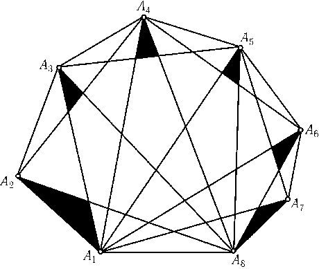

What is the minimum number of points necessary to mark inside a convex $n$-sided polygon, so that at least one marked point always lies inside any triangle whose vertices are shared with those of the polygon?
Since the diagonals going from one vertex divide the $n$-sided polygon into $n-2$ triangles, then $n-2$ points are necessary.
From the diagram we can see how $n-2$ points can be placed to fulfil the requirements; it is sufficient to place one marked point in each of the black triangles. In fact, inside any triangle $A_pA_qA_r$ where $p \l q \l r$ there will always be a black triangle at vertex $A_q$
$n-2$